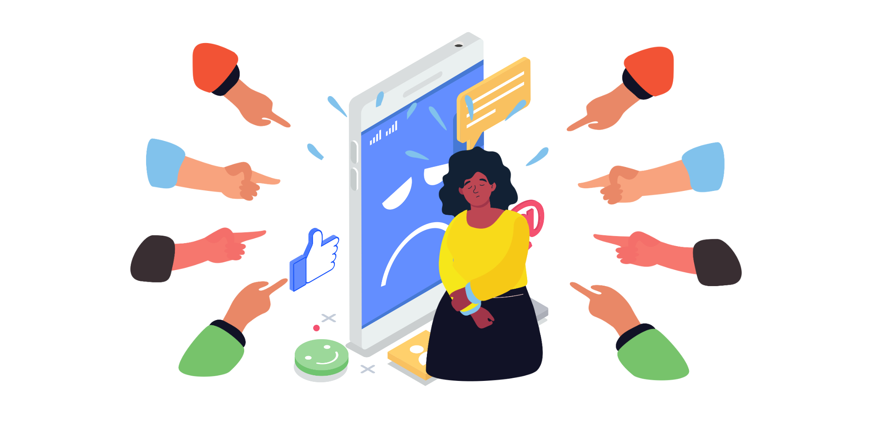

Con la presencia de la tecnología y la eventual llegada de las redes sociales, el ciberacoso o ciberbullying se ha convertido en un fenómeno alarmante que afecta la vida de muchos jóvenes hoy en día. El ciberacoso implica todo tipo de actos crueles y ofensivos a través de medios digitales y puede tener consecuencias devastadoras en la salud mental y emocional de los alumnos. Los profesores desempeñan un papel fundamental en la identificación y prevención del ciberacoso, ya que son quienes interactúan más de cerca con los jóvenes, a veces más que un padre de familia. Por lo tanto, hay una necesidad imperante de un profesor responsable en estos casos.
Es fundamental que los docentes estén preparados para reconocer estas señales, ya que esto no solo les permite brindar el apoyo necesario al estudiante afectado, sino que también se pueden tomar medidas proactivas para abordar estas situaciones de manera estratégica y efectiva, fomentando un entorno escolar seguro y respetuoso. Más allá del rol tradicional de impartir conocimientos, los profesores tienen la responsabilidad de velar por el bienestar integral de sus estudiantes, y esto incluye protegerlos de situaciones de acoso en línea.
Tips para reconocerlos
- Cambios en el comportamiento en línea: si el estudiante muestra cambios notables en su comportamiento en línea, como volverse reservado o retirarse de las redes sociales, es un signo de alerta.
- Uso excesivo de dispositivos: Si notas que el estudiante está constantemente en su dispositivo, incluso durante las clases, podría ser un indicio de que está tratando de evitar una situación incómoda.
- Expresiones emocionales: Presta atención a las expresiones emocionales en el trabajo escolar o en las interacciones en línea. Pueden revelar si el estudiante está angustiado o experimentando problemas.
- Retirada social: Si el estudiante comienza a retirarse de sus amigos o compañeros de clase y muestra un cambio en su vida social, esto podría ser un signo de que se siente triste o solo.
- Cambios en el rendimiento académico: La víctima de ciberacoso puede experimentar un deterioro en su rendimiento académico debido a la distracción y el estrés emocional.
- Problemas emocionales: Si el estudiante muestra signos de ansiedad, depresión o estrés inexplicables, es importante investigar más a fondo.
- Comentarios inusuales: Presta atención a los comentarios inusuales que el estudiante pueda hacer sobre la web, las redes sociales o las interacciones en línea. Pueden proporcionar pistas sobre su experiencia en línea.
- Cambios en las actividades extracurriculares: La participación disminuida en actividades extracurriculares podría indicar que el estudiante está tratando de evitar situaciones en las que pueda ser acosado.
- Solicitud de ayuda o consejo: Si el estudiante se acerca a ti o a otro adulto de confianza en busca de ayuda o consejo sobre problemas en línea, es importante escuchar y tomar en serio sus preocupaciones.
- Información de terceros: A veces, otros estudiantes pueden ser conscientes del ciberacoso. Presta atención si otros alumnos mencionan preocupaciones sobre el estudiante en cuestión.